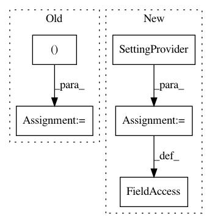

0088176376f87417437131c0e2fe911213351bd3,Orange/widgets/unsupervised/owmds.py,OWMDS,OWMDS_2,#,84
Before Change
("None", -1)
]
JitterAmount = [
("None", 0),
("0.1 %", 0.1),
("0.5 %", 0.5),
("1 %", 1.0),
("2 %", 2.0)
]
//: Runtime state
Running, Finished, Waiting = 1, 2, 3
settingsHandler = settings.DomainContextHandler()
After Change
legend_anchor = settings.Setting(((1, 0), (1, 0)))
graph = SettingProvider(OWMDSGraph)
jitter_sizes = [0, 0.1, 0.5, 1, 2, 3, 4, 5, 7, 10]
graph_name = "graph.plot_widget.plotItem"
In pattern: SUPERPATTERN
Frequency: 3
Non-data size: 5
Instances
Project Name: biolab/orange3
Commit Name: 0088176376f87417437131c0e2fe911213351bd3
Time: 2017-09-28
Author: jerneju@gmail.com
File Name: Orange/widgets/unsupervised/owmds.py
Class Name: OWMDS
Method Name: OWMDS_2
Project Name: biolab/orange3
Commit Name: 00e20a04533bd58c9074cc19205b5c28adfef2c9
Time: 2016-10-29
Author: janez.demsar@fri.uni-lj.si
File Name: Orange/widgets/unsupervised/owmanifoldlearning.py
Class Name: OWManifoldLearning
Method Name: OWManifoldLearning_1
Project Name: biolab/orange3
Commit Name: 96ed45619f3cd8ec0997b84c7f48e813a854cca1
Time: 2016-10-28
Author: janez.demsar@fri.uni-lj.si
File Name: Orange/widgets/unsupervised/owmanifoldlearning.py
Class Name: OWManifoldLearning
Method Name: OWManifoldLearning_1